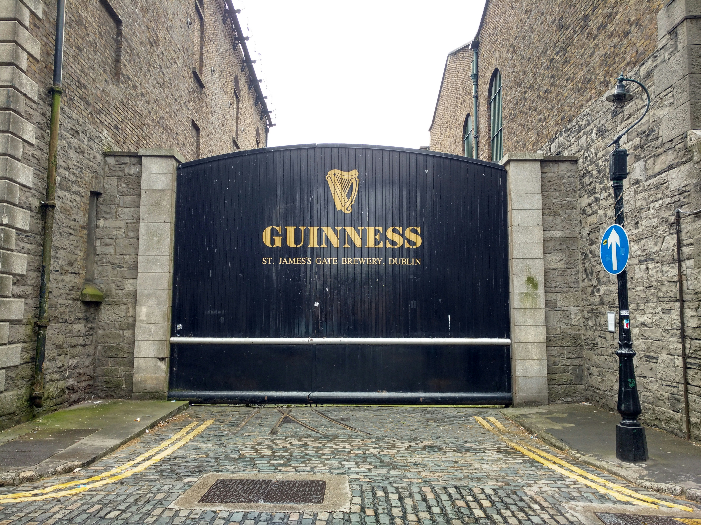
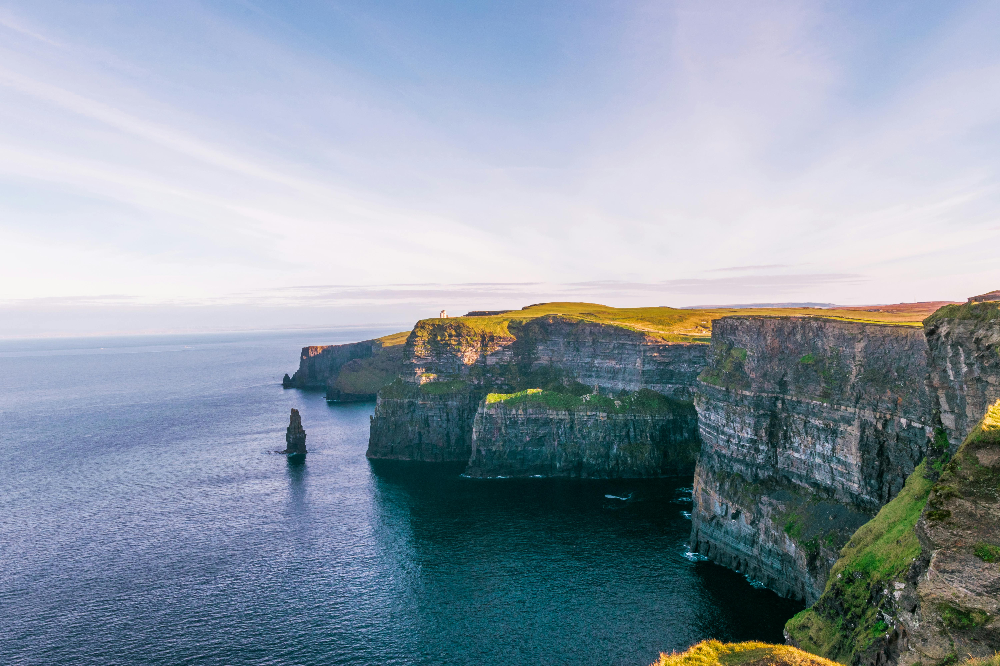
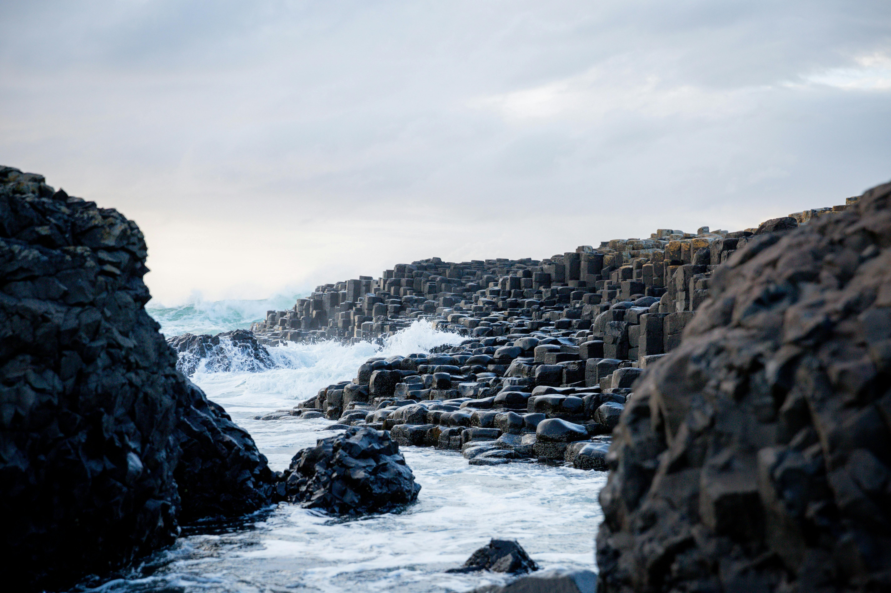
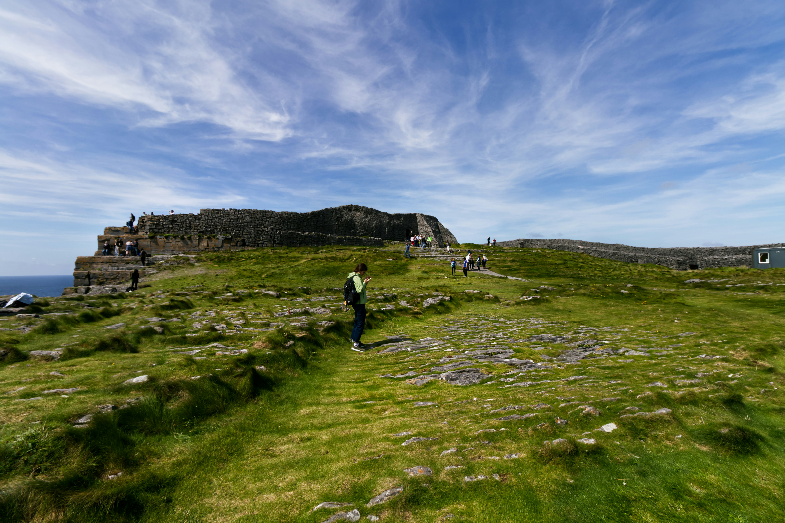

The Guinness Storehouse in Dublin is a museum and visitor center dedicated to Ireland’s world-famous stout. You can learn about the history of Guinness, see how it’s made, and enjoy panoramic views of the city from the Gravity Bar.

The Cliffs of Moher rise dramatically along the western coast of Ireland, reaching heights of over 200 meters. They offer breathtaking views of the Atlantic Ocean and are home to a variety of seabirds, making them one of Ireland’s most popular natural attractions.

The Giant’s Causeway is made of thousands of hexagonal basalt columns formed by ancient volcanic activity. Legend says the giant Fionn mac Cumhaill built the causeway to cross the sea to Scotland and fight another giant. It is a UNESCO World Heritage Site and a popular tourist destination.

The Aran Islands are a group of three islands off the west coast of Ireland, Inishmore, Inishmaan, and Inisheer. They are known for their strong Irish culture, traditional music, and scenic landscapes, with ancient forts and charming villages to explore.